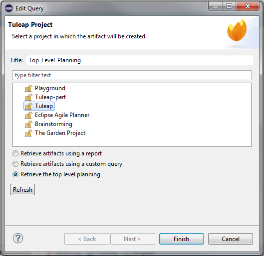
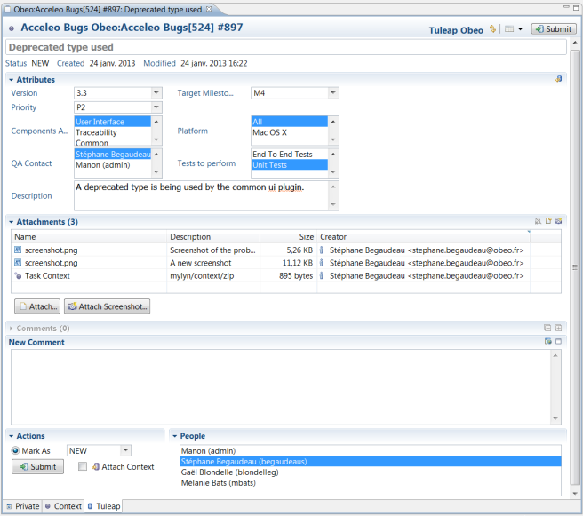
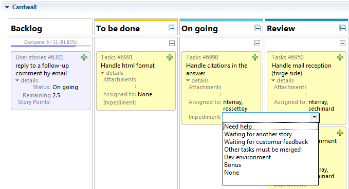

In order to install the connector, you can use the Eclipse Marketplace available from the "Help -> Eclipse Marketplace" menu. In the marketplace, you just have to search for Tuleap in order to find the latest version of the connector available.
To establish a connection with a Tuleap server, you need to go in the Task Repositories or Team Repositories view in order to create a new Mylyn repository. Select the Task connector "Tuleap Repository Connector" and click next.
In the next page of the wizard, you have access to the page used to connect to the Tuleap server. Use the URL of the trackers of your Tuleap project along with your Tuleap username and password to connect to the Tuleap server as shown in the following screenshot.
Your login and password will be valited prior to the connection but you can force the verification to ensure that your credentials are valid. Do not forget to make sure that the connector will remember your password by checking the associated checkbox.
Once you have created your repository, Mylyn Task will ask you to create a query in order to retrieve your tasks from the Tuleap server. You can use the new Query wizard in order to create your query. First you will have to select the project for which you want to create the query.
Once your project is selected, you have to select the type of query to perform. In fact, there are three types of queries. The first one uses reports relying on a specific tracker of the selected project. To create a such query, you can select the first alternative and give a name to your query. Then you can select the concerned tracker and validate your choice.
The second type relies on a specific set of criteria, in order to filter the results according to these criteria. There is one criterion per field, and each criterion entered is used to filter the results returned. Just leave a criterion empty (as it is by default) if you don't want to use it to filter the results. A query is somewhat like a Tuleap report, except the criteria are stored in your eclipse, not on the Tuleap server. So, such a query cannot be shared with other users.
The third type of query is used to access the Top-level planning. The top-level planning allows you to plan top-level backlog items in top-level milestones. For instance, if you use Sprints in Releases, you'll be able to plan which backlog items should go into which release. To do so, you can select the relevant project, select the third alternative and validate your query.
When your query has been executed by Mylyn Task, its result will be available in the Task List view. In this view, you can see the list of the tasks matching your query along with the completion of the query.
If you want to display a specific task, you just have to double click on it from the Task List view.
Once modified, you can update the task on the Tuleap server by using the "Submit" button on top of the editor.
If the configuration of your Tuleap tracker allows it, you can add attachments to your task directly from the Tuleap task editor.

You can also use the screenshot tooling to directly attach a screenshot with various annotations.
Mylyn Task will let you activate a specific task thanks to the round button in the Task List view and at the top of the task editor. Once a task has been activated, all manipulated elements will be linked with the active task. You can see those linked element in the context tab of the task editor. When you are done working on a specific task, you just need to uncheck the activate task button. The task and its context will then be closed.
You can easily retrieve the context of a task by re-activating it. All the elements of the context that you had used will be reopened.
You can easily attach the context of a task as an attachment and submit it on the Tuleap server. You can retrieve the context from an attachment too.
If you want to display a task planning, you just have to open the task and go under the "Planning" tab.
In the case of a "top planning", the releases are sorted by date descending on the right and the backlog is displayed on the left.
In the case of a "release planning", the release's sprints are sorted by date descending on the right and the backlog is displayed on the left.
In the case of a "sprint planning", the sprints's sub-milestones are sorted by date descending on the right, the backlog is displayed on the bottom left and the burn-down chart on the up left. When there are no sub-milestones, the backlog is displayed on the right, and the burn-down chart is displayed on the left. If there is no burn-down chart, then the backlog occupy the whole planning tab.
If you want to organize artifacts belonging to backlog, releases or sprints, you can select one or many ones and then drag and drop them on target.
You have the possibility to expand and collapse milestones one by one, or all at once.
- To expand a milestone, click on the small triangle that is pointing right on the left of milestone's name.
- To collapse a milestone, click on the small triangle that is pointing down on the left of milestone's name.
- To expand all milestones at once, click on the "plus" icon on the top right of milestones section.
- To collapse all milestones at once, click on the "minus" icon on the top right of milestones section.
You have the possibility to create an artifact directly from the planning editor. To do so, click on the "plus" icon on the top right of the backlog. Then the list of available trackers will be displayed. Choose the tracker and validate your choice.
If you want to display a task card wall, you just have to open the task and go under the "Card Wall" tab.
Every card displays its type and its identifier as a link. When clicking on this link, the task is opened.
You have the possibility to direct edit the card details. To do so, you can click a first time on the field value in order to select it and then a second time in order to enter the edit mode for this field.
Cards could be organized with drag-and-drop to indicate their states. If the target column belongs to the cards' authorized columns, the moved card is displayed on this column. If the target column does not belong to the cards' authorized columns, a banning sign is displayed.
You have the possibility to expand and collapse cells cards one by one, or all column cells cards at once.
- To expand a cell cards, click on the "plus" sign on the top right of the cell.
- To collapse a cell cards, click on the "minus" sign on the top right of the cell.
- To expand all column cells cards at once, click on the "plus" icon on the right of the column's name.
- To collapse all column cells cards at once, click on the "minus" icon on the right of the column's name.
You have the possibility to create a card directly from the card wall editor. To do so, click on the "plus" icon on the top right of a card. Then the list of available trackers will be displayed. Choose the tracker and validate your choice.